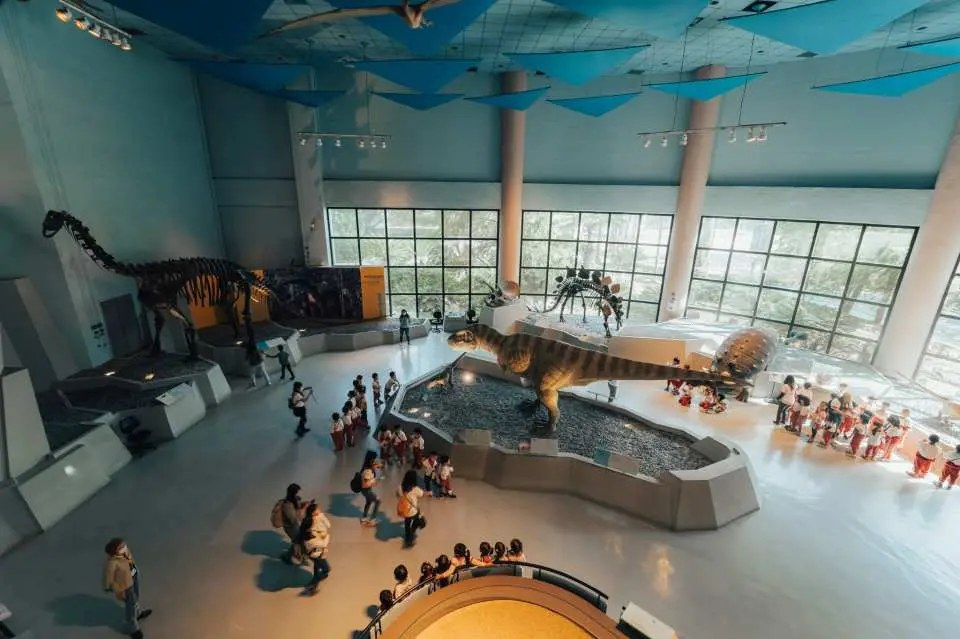

一、博物館簡介
國立自然科學博物館位在臺中市北區館前路一號， 是臺灣中部最知名的科學與自然史博物館之一。園區占地約 8.9 萬平方公尺， 由科學中心、太空劇場、生命科學廳、人類文化廳、地球環境廳與植物園六個展示場所組成。
本篇的閱讀焦點：這座博物館如何把自然史、科學體驗與戶外植物園放在同一趟參觀裡。 對第一次拜訪的人來說，館內的恐龍展示最容易留下印象， 但走到園區其他角落，還能看到科學繪圖、太空劇場和玻璃溫室，內容比想像中更豐富。
二、歷史沿革
博物館的規劃起於 1980 年前後的國家文化建設計畫。 1981 年 2 月 27 日，籌備處在中興大學成立， 由當時的理工學院院長漢寶德擔任主任，並確立以「人與自然」為展示重點， 用主題展示取代傳統的分類陳列。
籌備處先派人到美國的科學博物館考察，回國後決定優先興建科學中心與太空科學展示館。 1986 年 1 月 1 日，第一期工程的科學中心與太空劇場正式開放， 這一天也被視為博物館對外開館的起點。1987 年組織條例公布後，博物館制度逐步完整； 資料顯示後續工程在 1988 年與 1993 年陸續完成。
由於 2026 年正好是開館四十週年，館方推出週五午後免費參觀的活動， 讓更多民眾在週末前走進展廳。這也顯示，這座從 1980 年代規劃的博物館， 至今仍持續和新一代的觀眾見面。
三、展區特色與參觀順序
三個值得留意的特色
- 恐龍展示：是許多孩子與家庭來館的首要目標。
- 科學繪圖展示間：可以透過玻璃窗看到繪圖老師創作，旁邊有對講機能提問。
- 植物園：隔著一條馬路就能前往，玻璃溫室裡展示臺灣本土生態與熱帶雨林植物。
建議的參觀順序
以下順序是我自己規劃的參考，不是官方路線。
- 從正門進入本館，先看恐龍展示與大廳空間。
- 前往生命科學廳、人類文化廳與地球環境廳等常設展。
- 走到本館內側，經過科學繪圖展示間，觀察繪圖老師創作。
- 過馬路到植物園，最後在溫室中放慢腳步。
四、展區比較表
| 展區 | 背景或內容 | 觀察重點 |
|---|---|---|
| 科學中心 | 1986 年 1 月 1 日與太空劇場同期開放 | 以體驗和實作為主的科學展示 |
| 太空劇場 | 1986 年第一期工程開放 | 天文與太空主題的影像表演 |
| 常設展廳 | 生命科學廳、人類文化廳、地球環境廳 | 自然史、人類文化與地球環境的主題展示 |
| 植物園 | 位於本館旁，隔著馬路相望的玻璃溫室 | 約 400 多種植物與臺灣本土生態 |
五、展廳照片

六、影片介紹
看完文字與照片後，可以透過影片對照實際空間與展示內容。
若播放器無法顯示，可以 到 YouTube 觀看影片（另開分頁）。
影片來源：YouTube（影片連結見上方）。
七、位置地圖
地址：臺中市北區館前路一號在 Google 地圖開啟「國立自然科學博物館」（另開分頁）
地圖來源：Google 地圖；座標取自公開百科資料，請以地圖顯示位置為準。
八、資料來源
文字依下列資料整理；參觀順序與觀察重點是我自己的規劃。
照片、影片與地圖來源已分別標示於各章節。資料整理日期：2026 年 10 月 29 日。